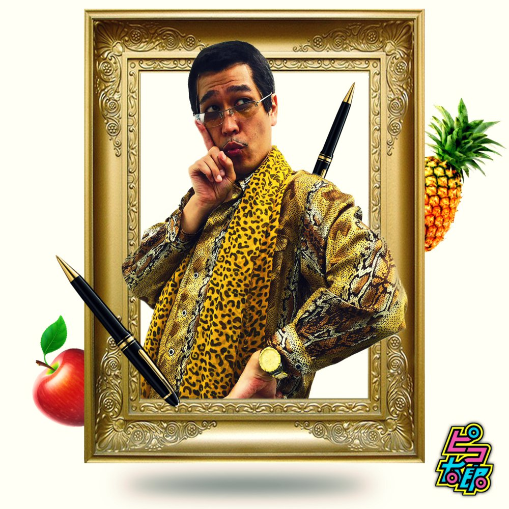
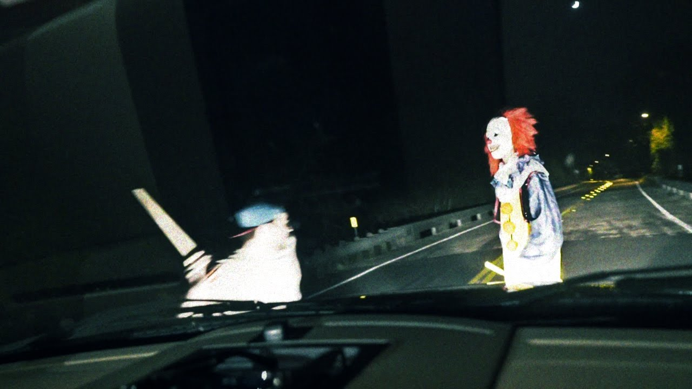
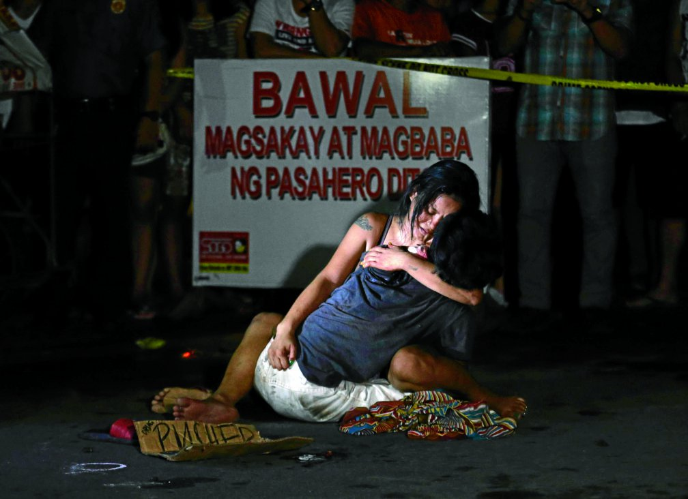

"PPAP (Pen-Pineapple-Apple-Pen)" is a single by Pikotaro, a fictional singer-songwriter created and portrayed by Japanese comedian Daimaou Kosaka. It was released as a music video on YouTube on 25 August 2016, and has since become a viral video, generating over 70 million views, spawning parodies, and being hailed as the new "Gangnam Style". The single itself reached number 2 on the Billboard Japan Hot 100 chart and became the shortest single to chart in the Billboard Hot 100.
"PPAP", alongside three other works by Pikotaro, was released to digital storefronts through Avex Music Creative on 7 October 2016. An instrumental version of the song was made available on 12 October 2016.
The song is written in the key of C# minor with a common time tempo of 136 beats per minute. Pikotaro's vocals span from F♯3 to C♯5 in the song.
The song originated as a music video released on YouTube on 25 August 2016. In the video, Pikotaro, dressed in an animal print costume, dances around, and then sings English lyrics "I have a pen. I have an apple. Apple pen." while making the gestures of holding the related items and pushing them together. The video's expense was about 100,000 yen. It accumulated about 1 million hits in its first month of play.
On 27 September 2016, Canadian pop singer Justin Bieber shared the video on Twitter, captioning it as his "favorite video on the Internet". The video has since gone viral, averaging over 1.5 million hits a day, and being touted as the new "Gangnam Style" by the media. It has spawned many videos from people doing their own versions. On 26 September, Pikotaro released a video on how to do the dance and the gestures. On 27 October, Pikotaro posted a "long version" music video of the song.
Scariest clown yet? Well, we've just hit a so called ‘killer clown’
As the ‘killer clown’ craze spreads across Britain, many witnesses have been documenting and sharing their encounters on social media.
"We were driving around at night with a group of friends who had no idea what was going to happen. Blake gets out of his truck to beat up a clown, and hits him with a bat. Once the clown is down he proceeds to 'run him over'. But that wasn't enough to stop him, he comes running back at the truck with his broom and hops on the back of, while everyone who isn't in on it is screaming in fear." - Michael Sullivan
The unsettling craze, which began in the United States before spreading to other countries, has led to a spike in clown-related calls to police forces in the UK.
In response, police have warned that pranksters or criminals using the costumes to scare innocent members of the public could face arrest.
Duterte's war on drugs
What is happening in this country?
Samsudin Dimaukom, the mayor of a southern Philippines town, was watching television one Sunday after midnight when he was startled to hear the country’s new President call out his name.
 An innocent victim of the duterte's war on drugs was seen lying on the road. The case was considered an extra judicial killingIt was no honor. President Duterte was reading a list of more than 150 officials he said were involved in the illegal drug trade. He ordered Dimaukom and the others to turn themselves in within 24 hours or be hunted down.
"We were really surprised when the President came out to announce it,” Dimaukom, mayor of Datu Saudi Ampatuan, said by e-mail. “Not once were we involved in drugs. In fact, we were fighting drugs. I support the President’s drug war."
Since he took office six weeks ago, Mr. Duterte, 71, has roiled the nation with a violent war on drugs that has left hundreds dead, most of them poor and powerless.
Last week, in what seemed a new phase, he took on judges and police generals, military officials, more than 50 mayors and local officials, and three men said to be current or former members of Congress. He stripped them of their weapons permits and, in some cases, their government security details, potentially leaving them vulnerable to vigilantes.